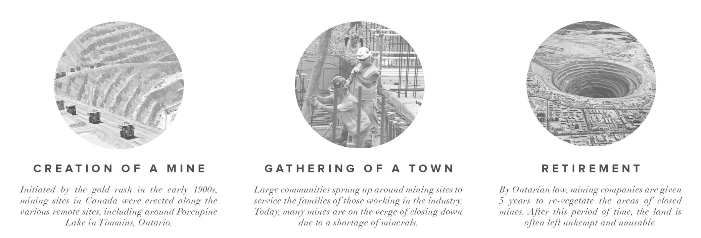
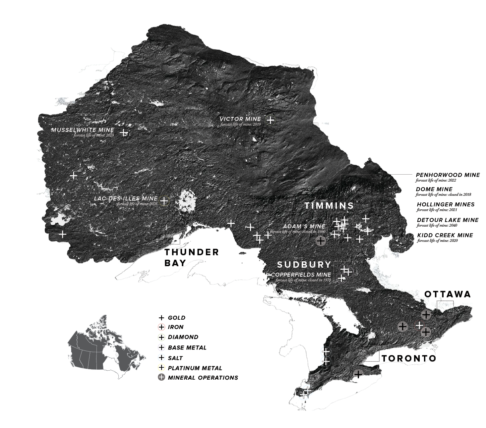
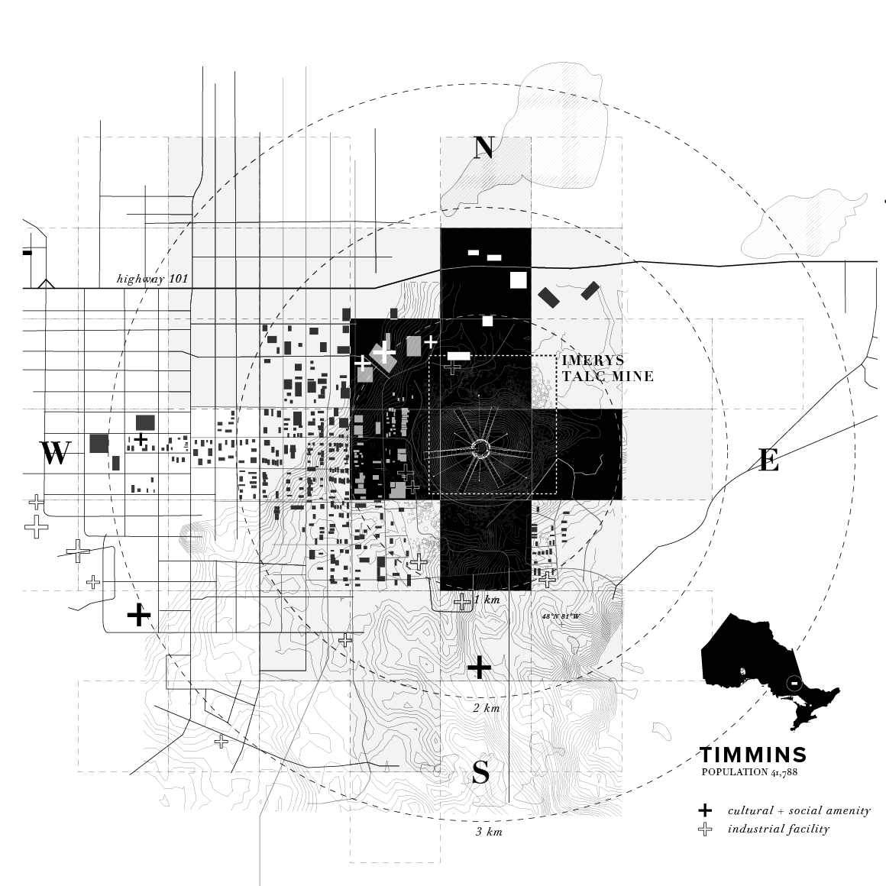
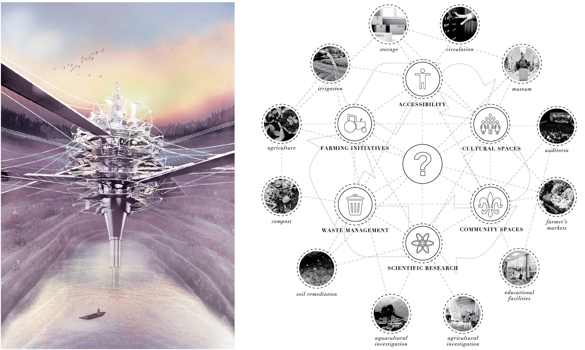
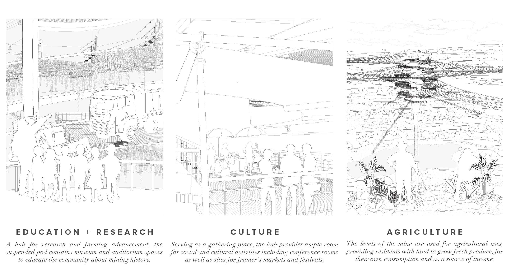
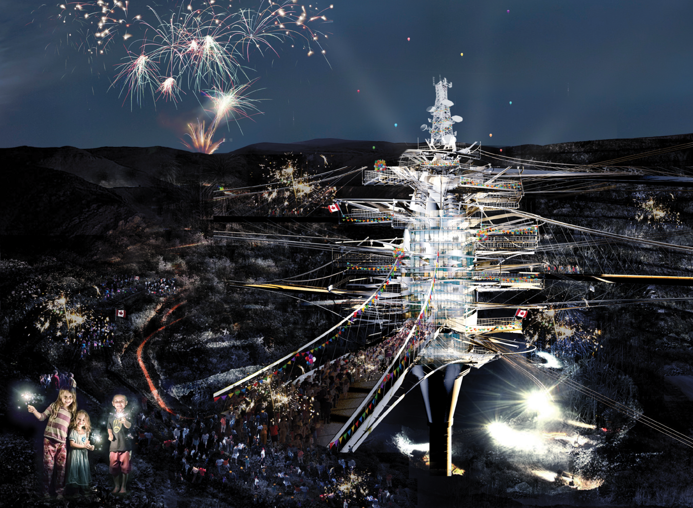
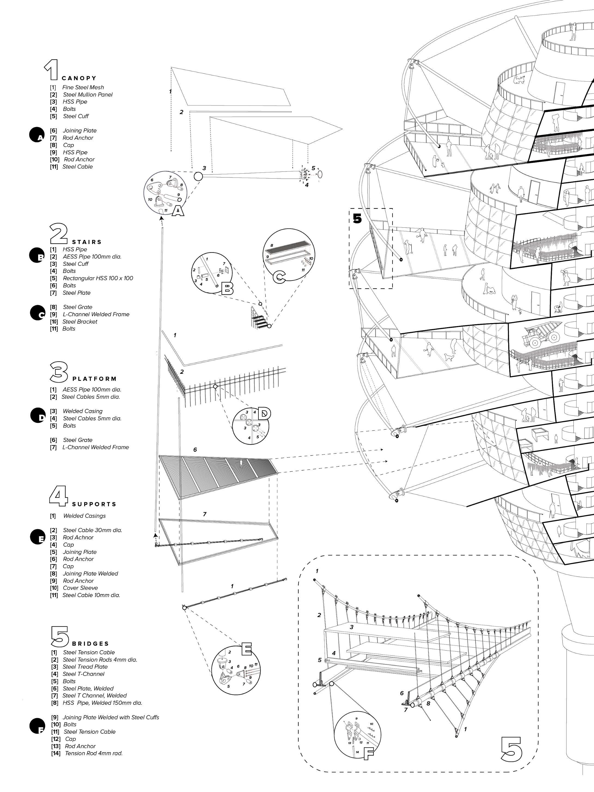

2018
UPROOT
a geo-engineered fabulation
In anticipation of the closure of several northern Ontario’s mines, UPROOT provides a structure with an alternative use for these areas. The intervention calls for the redevelopment of open-pit mines into stepping community farmland, offering new possibilities for its use after closure as a suspended hub for agricultural and social activities.
CONTEXT
ACSA / AISC Steel
Design Competition
LOCATION
Timmins, Ontario
SOFTWARE
Rhinoceros3D, Grasshopper (+Pufferfish), V-Ray, Photoshop, Illustrator
RECOGNITION
1st Place, Open Category (ACSA/AISC Competition)
Top 25 Semi-Finalist (CTBUH)
CISC Ontario Reigon Scholarship

Fig. 1. Aerial view of Uproot intervention


Fig. 2. Mining industry in Ontario, Canada

Fig. 3. Site Plan

Fig. 4. View from within the mine


Fig. 5. Site Section

Fig. 6. Canada Day celebrations at the mine

Fig. 7. Exploded Axonometric + Sectional Perspective